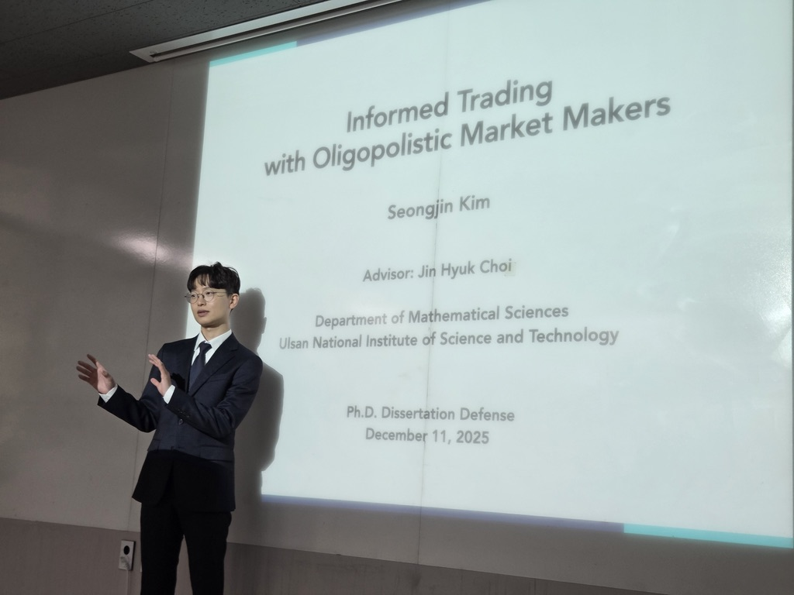
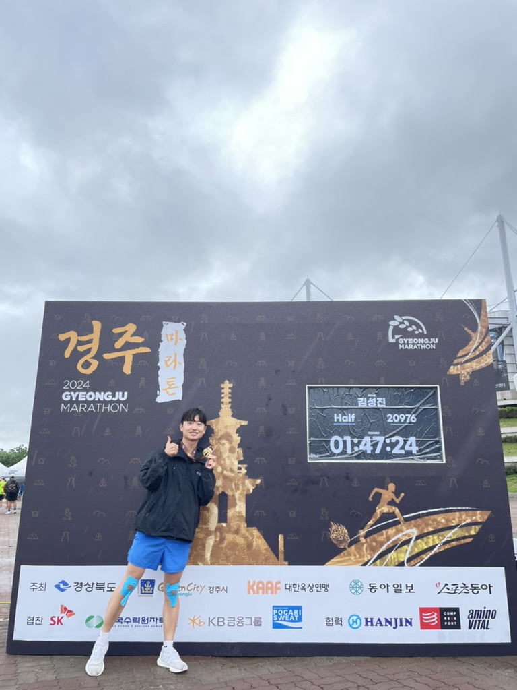
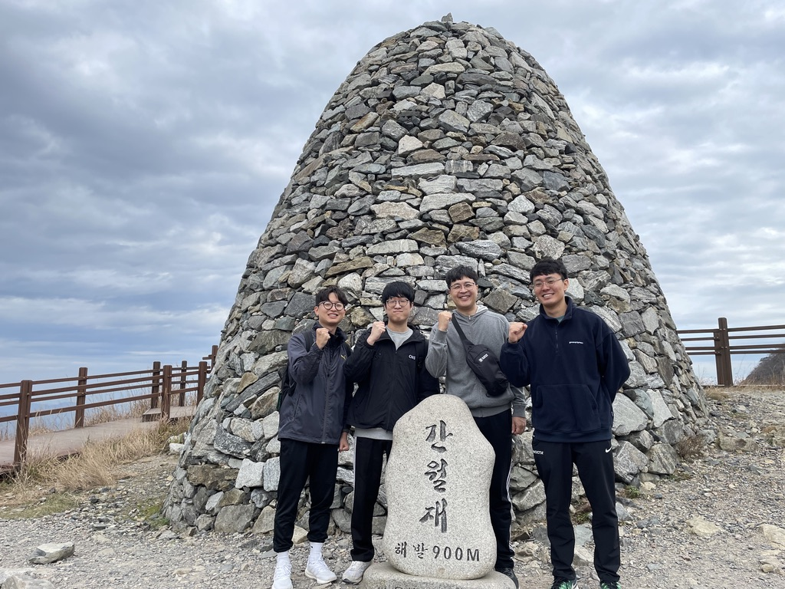

Seongjin Kim
김성진
Center for AI Finance (CAIF)
Sungkyunkwan University, Korea
Sungkyunkwan University, Korea
Email: seongjinkim@skku.edu

Research Interests
My research lies in the fields of financial mathematics and stochastic analysis. I am particularly interested in asymmetric information problems in market microstructure, with a focus on the Kyle-Back equilibrium framework.
- Financial Mathematics
- Stochastic Analysis
- Optimal Control
- Market Microstructure
- Kyle-Back Equilibrium
- DeFi & AMMs
Education
Ph.D. in Mathematical Sciences
Ulsan National Institute of Science and Technology (UNIST), Ulsan, Korea
September 2020 – February 2026 | Advisor: Jin Hyuk Choi
B.S. in Mathematics Education
Sangmyung University, Seoul, Korea
March 2014 – August 2020
Publications
Published
Finance Research Letters, Volume 100, June 2026, 109994
Published
Multiplicity Results of Solutions to the Double Phase Anisotropic Variational Problems Involving Variable Exponent
Advances in Differential Equations, 28(5/6): 467–504, 2023
Published
Multiplicity of Solutions for Double Phase Equations with Concave–Convex Nonlinearities
Journal of Applied Analysis & Computation, 11(6): 2921–2946, 2021
Published
Under Revision
Oligopolistic Kyle Models: Discrete-Time Limits and Continuous-Time Admissibility
Under revision at SIAM Journal on Financial Mathematics
Under Revision
Presentations
Conference Talks
Oligopolistic Kyle Models: Discrete-Time Limits and Continuous-Time Admissibility
The 2nd Sookmyung-TMU Mathematical Finance Workshop with Young Researchers — Sookmyung Women's University, Seoul, Mar. 2026
Oral
Oligopolistic Market Equilibrium and the Effect of Observing Noise Trades
Quantitative Methods in Finance 2025 — University of Technology Sydney (UTS), Dec. 2025
Oral
Oligopolistic Market Equilibrium and the Effect of Observing Noise Trades
Quantitative Finance Conference 2025 — National University of Singapore (NUS), Aug. 2025
Oral
Informed Trader's Knowledge about Noise Trades and Its Impact on Oligopolistic Market Equilibrium
KSIAM Annual Meeting 2023 — Gwangju, Nov. 2023
Poster
Excellent Poster Award
Invited Lectures
Principles of Option Pricing
Sangmyung University, Apr. 13, 2026
Mathematics of Insider Trading: Focusing on the Kyle Model
Sangmyung University, Feb. 26, 2026
Teaching
AI Statistics — Sungkyunkwan University, 2026 Spring
Curriculum Vitae
You can download my CV as a PDF.
Download CV (PDF)Photos

Caption 1

Caption 2

Caption 3